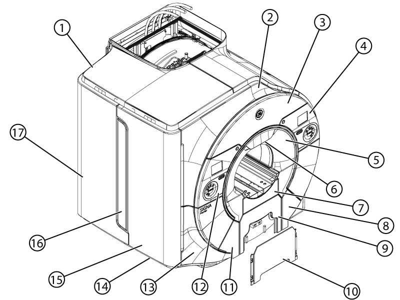
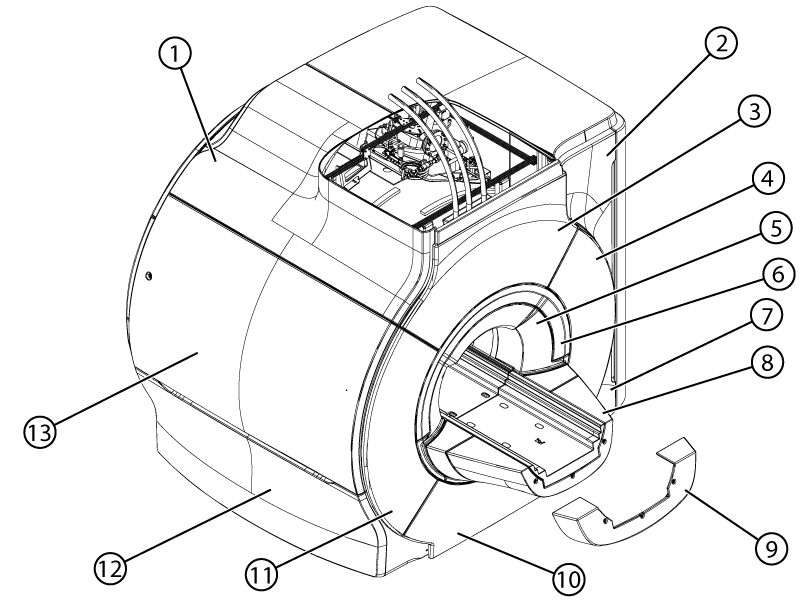

- 00000018WIA30203110GYZ
- id_20035992.22
- Jul 28, 2025 5:19:29 PM
Removing and installing the magnet enclosure covers for IPM Magnet
Provides removal and installation instruction for all magnet enclosure covers.
About this task


Provides removal and installation instruction for all magnet enclosure covers.

